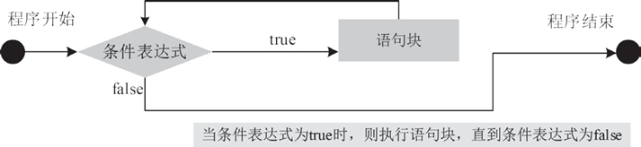
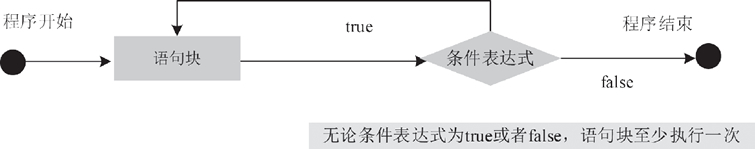

首页 > Java教程 > Java流程控制语句
Java while和do while循环详解
循环是程序中的重要流程结构之一。循环语句能够使程序代码重复执行，适用于需要重复一段代码直到满足特定条件为止的情况。
所有流行的编程语言中都有循环语句。Java 中采用的循环语句与C语言中的循环语句相似，主要有 while、do-while 和 for。另外 Java 5 之后推出了 for-each 循环语句，for-each 循环是 for 循环的变形，它是专门为集合遍历而设计的。for-each 并不是一个关键字。
循环语句可以在满足循环条件的情况下，反复执行某一段代码，这段被重复执行的代码被称为循环体。当反复执行这个循环体时，需要在合适的时候把循环条件改为假，从而结束循环，否则循环将一直执行下去，形成死循环。
循环语句可能包含如下 4 个部分。
上面 4 个部分只是一般性的分类，并不是每个循环中都非常清晰地分出了这 4 个部分。
由于篇幅有限，本文主要介绍 while 和 do-while。关于 for 循环，大家可以参考《Java for语句详解》一节。
while 循环语句的语法结构如下：
执行完毕，再次检查表达式是否为 true，如果还为 true，则再次执行大括号中的代码，否则就跳出循环，执行 while 循环之后的代码。图 1 表示了 while 循环语句的执行流程。
运行程序，执行的结果如下所示：
幸运的是，Java就提供了这样的循环：do-while循环。do-while 循环语句也是 Java 中运用广泛的循环语句，它由循环条件和循环体组成，但它与 while 语句略有不同。do-while 循环语句的特点是先执行循环体，然后判断循环条件是否成立。
do-while 语句的语法格式如下：
运行程序，执行的结果如下所示。
while 循环和 do-while 循环的不同处如下：
所有流行的编程语言中都有循环语句。Java 中采用的循环语句与C语言中的循环语句相似，主要有 while、do-while 和 for。另外 Java 5 之后推出了 for-each 循环语句，for-each 循环是 for 循环的变形，它是专门为集合遍历而设计的。for-each 并不是一个关键字。
循环语句可以在满足循环条件的情况下，反复执行某一段代码，这段被重复执行的代码被称为循环体。当反复执行这个循环体时，需要在合适的时候把循环条件改为假，从而结束循环，否则循环将一直执行下去，形成死循环。
循环语句可能包含如下 4 个部分。
- 初始化语句（init statement）： 一条或多条语句，这些语句用于完成一些初始化工作，初始化语句在循环开始之前执行。
- 循环条件（test_expression）：这是一个 boolean 表达式，这个表达式能决定是否执行循环体。
- 循环体（body_statement）：这个部分是循环的主体，如果循环条件允许，这个代码块将被重复执行。如果这个代码块只有一行语句，则这个代码块的花括号是可以省略的。
- 迭代语句（iteration_statement）：这个部分在一次循环体执行结束后，对循环条件求值之前执行，通常用于控制循环条件中的变量，使得循环在合适的时候结束。
上面 4 个部分只是一般性的分类，并不是每个循环中都非常清晰地分出了这 4 个部分。
由于篇幅有限，本文主要介绍 while 和 do-while。关于 for 循环，大家可以参考《Java for语句详解》一节。
while 语句
while 语句是 Java 最基本的循环语句，是一种先判断的循环结构，可以在一定条件下重复执行一段代码。该语句需要判断一个测试条件，如果该条件为真，则执行循环语句（循环语句可以是一条或多条），否则跳出循环。while 循环语句的语法结构如下：
while(条件表达式) {
语句块;
}
其中语句块中的代码可以是一条或者多条语句，而条件表达式是一个有效的 boolean 表达式，它决定了是否执行循环体。当条件表达式的值为 true 时，就执行大括号中的语句块。执行完毕，再次检查表达式是否为 true，如果还为 true，则再次执行大括号中的代码，否则就跳出循环，执行 while 循环之后的代码。图 1 表示了 while 循环语句的执行流程。

图 1 while 循环语句执行流程图
图 1 while 循环语句执行流程图
例 1
使用 while 语句计算 10 的阶乘，其具体代码如下所示。
public static void main(String[] args) {
int i = 1;
int n = 1;
while(i <= 10) {
n=n*i;
i++;
}
System.out.println("10的阶乘结果为："+n);
}
在上述代码中，定义了两个变量 i 和 n，循环每执行一次 i 值就加 1，判断 i 的值是否小于等于 10，并利用 n=n*i 语句来实现阶乘。当 i 的值大于 10 之后，循环便不再执行并退出循环。运行程序，执行的结果如下所示：
10 的阶乘结果为：3628800
do-while 语句
如你刚才所见，如果 while 循环一开始条件表达式就是假的，那么循环体就根本不被执行。然而，有时需要在开始时条件表达式即使是假的情况下，while 循环至少也要执行一次。换句话说，有时你需要在一次循环结束后再测试中止表达式，而不是在循环开始时。幸运的是，Java就提供了这样的循环：do-while循环。do-while 循环语句也是 Java 中运用广泛的循环语句，它由循环条件和循环体组成，但它与 while 语句略有不同。do-while 循环语句的特点是先执行循环体，然后判断循环条件是否成立。
do-while 语句的语法格式如下：
do {
语句块;
}while(条件表达式);
以上语句的执行过程是，首先执行一次循环操作，然后再判断 while 后面的条件表达式是否为 true，如果循环条件满足，循环继续执行，否则退出循环。while 语句后必须以分号表示循环结束，其运行流程如图 2 所示。

图 2 do-while 循环语句的执行流程
图 2 do-while 循环语句的执行流程
例 2
编写一个程序，计算 10 的阶乘。使用 do-while 循环的实现代码如下所示。
public static void main(String[] args) {
int number = 1,result = 1;
do {
result*=number;
number++;
}while(number <= 10);
System.out.print("10阶乘结果是："+result);
}
程序运行后输出结果如下：
10 阶乘结果是：3628800
例 3
在一个图书系统的推荐图书列表中保存了 50 条信息，现在需要让它每行显示 10 条，分 5 行进行显示。下面使用 do-while 循环语句来实现这个效果，其具体代码如下所示。
public static void main(String[] args) {
int bookIndex = 1;
do {
System.out.print(bookIndex+"\t");
if(bookIndex%10 == 0) {
System.out.println();
}
bookIndex++;
}while(bookIndex<51);
}
在上述代码中， 声明一个变量 bookIndex 用来保存图书的索引，该变量赋值为 1 表示从第一本开始。在 do-while 循环体内，首先输出了 bookIndex 的值，然后判断 bookIndex 是否能被 10 整除，如果可以则说明当前行已经输出 10 条，用 System.out.println() 语句输出了一个换行符。之后使 bookIndex 加 1，相当于更新当前的索引。最后在 while 表达式中判断是否超出循环的范围，即 50 条以内。运行程序，执行的结果如下所示。
1 2 3 4 5 6 7 8 9 10 11 12 13 14 15 16 17 18 19 20 21 22 23 24 25 26 27 28 29 30 31 32 33 34 35 36 37 38 39 40 41 42 43 44 45 46 47 48 49 50
while和do-while的比较
while 循环和 do-while 循环的相同处是：都是循环结构，使用 while(循环条件) 表示循环条件，使用大括号将循环操作括起来。while 循环和 do-while 循环的不同处如下：
- 语法不同：与 while 循环相比，do-while 循环将 while 关键字和循环条件放在后面，而且前面多了 do 关键字，后面多了一个分号。
- 执行次序不同：while 循环先判断，再执行。do-while 循环先执行，再判断。
- 一开始循环条件就不满足的情况下，while 循环一次都不会执行，do-while 循环则不管什么情况下都至少执行一次。
关注公众号「站长严长生」，在手机上阅读所有教程，随时随地都能学习。内含一款搜索神器，免费下载全网书籍和视频。

微信扫码关注公众号